TV는 화면에서 떨어진 거리에서 리모컨으로 조작합니다. 콘텐츠와 설정 기능이 복잡해질수록, UI의 사용성을 직관만으로 판단하기 어려워집니다.
따라서 디자인 요소가 사용성에 어떤 영향을 주는지 실험으로 확인하고, 이를 설계에 활용할 수 있는 정량적 기준이 필요했습니다.
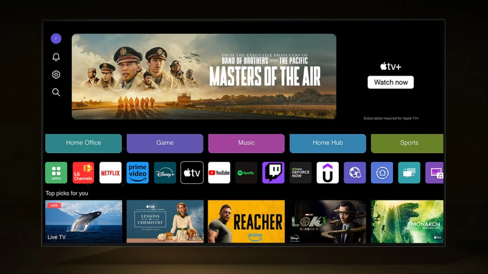
LG ELECTRONICS · TV USABILITY
원거리에서 조작하는 TV UI를 정량적으로 이해하고, 연구 결과를 디자인 의사결정을 지원하는 화면으로 구체화한 프로젝트.
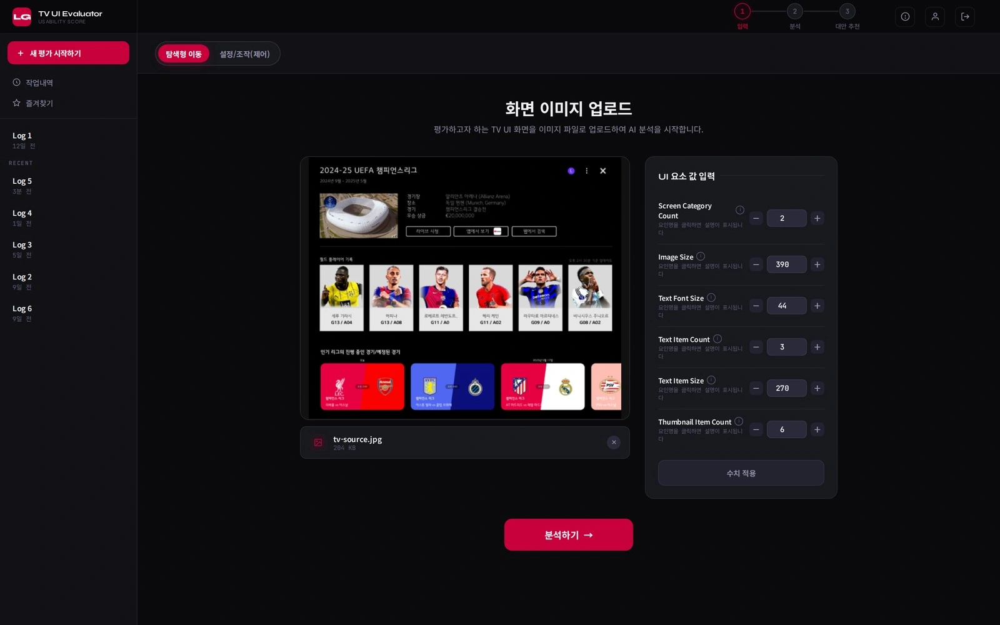
THE PROBLEM
TV는 화면에서 떨어진 거리에서 리모컨으로 조작합니다. 콘텐츠와 설정 기능이 복잡해질수록, UI의 사용성을 직관만으로 판단하기 어려워집니다.
따라서 디자인 요소가 사용성에 어떤 영향을 주는지 실험으로 확인하고, 이를 설계에 활용할 수 있는 정량적 기준이 필요했습니다.

시청 거리와 리모컨 입력을 고려한 가독성·조작성
콘텐츠·카테고리·설정 기능이 하나의 화면에 공존
감각이 아닌 실험 데이터로 설계 판단을 지원
대표 시퀀스 선정, 사용성 실험, 요인 분석 및 예측 모델 개발은 연구팀의 공동 작업입니다.
저는 연구진의 요구사항을 바탕으로 AI Design Tool UI 프로토타입을 제작·수정하고, 검토와 보고를 위한 시각 자료를 구성했습니다.
본 페이지의 연구 수치는 팀 연구 기록의 결과이며, 개인이 단독 산출하거나 별도로 재검증한 값이 아닙니다.
FROM RESEARCH TO INTERFACE
실험으로 요인을 선별하고 예측 모델을 구축한 뒤, 그 결과를 AI Design Tool의 평가 흐름으로 구체화했습니다.
webOS 기능과 사용자 목적을 분석해 평가 대상 정의
2수준 설계로 주요 사용성 요인 선별
3수준 실험 데이터로 사용성 예측 모델 개발
입력·분석·대안·비교가 이어지는 UI 프로토타입 제작
USER PURPOSE
검색·시청·제어 목적을 기준으로 TV 사용 흐름을 정리하고, 대표 화면을 선정했습니다.
음성 검색 · 앱 검색 · AI 검색
OTT · 스포츠 · 위시리스트 등
외부입력 · 퀵설정 · 쉬운 사용 등
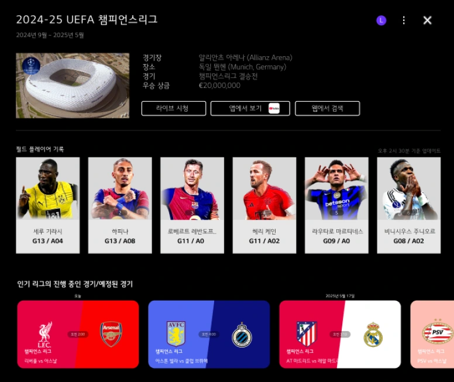
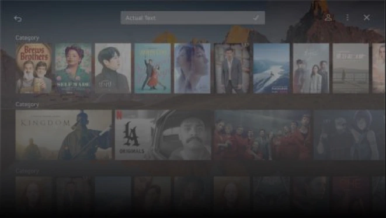
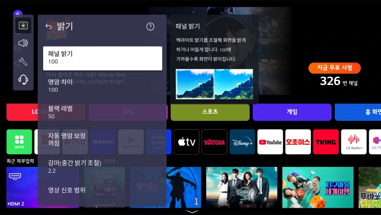
EVIDENCE SELECTION
선행 문헌·가이드라인 검토를 거쳐 핵심 요인을 압축하고, 실제 TV UI에서 측정할 수 있는 변수를 정의했습니다.
초기 후보
출현 빈도 기반 선별
전문가 검토·중복 정리
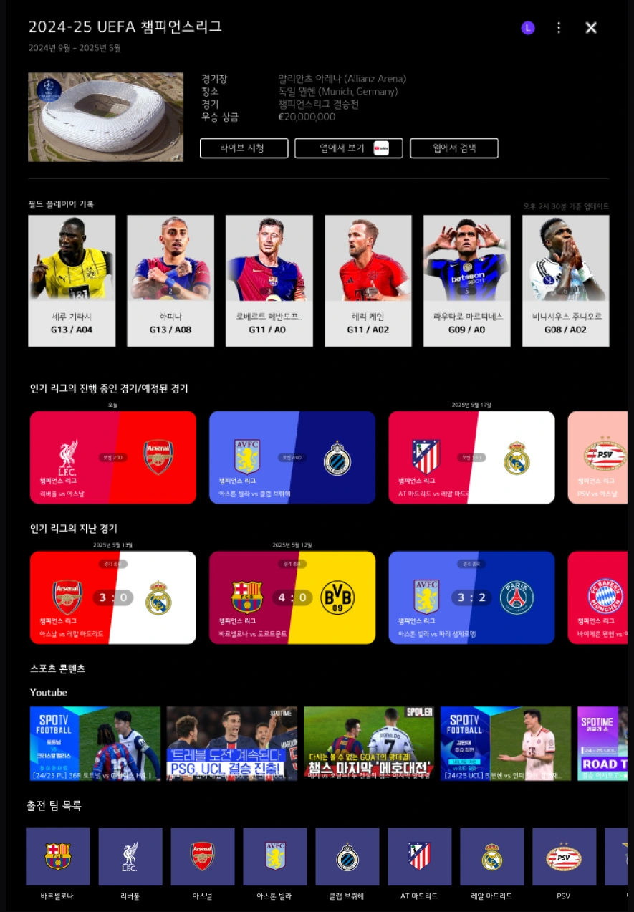
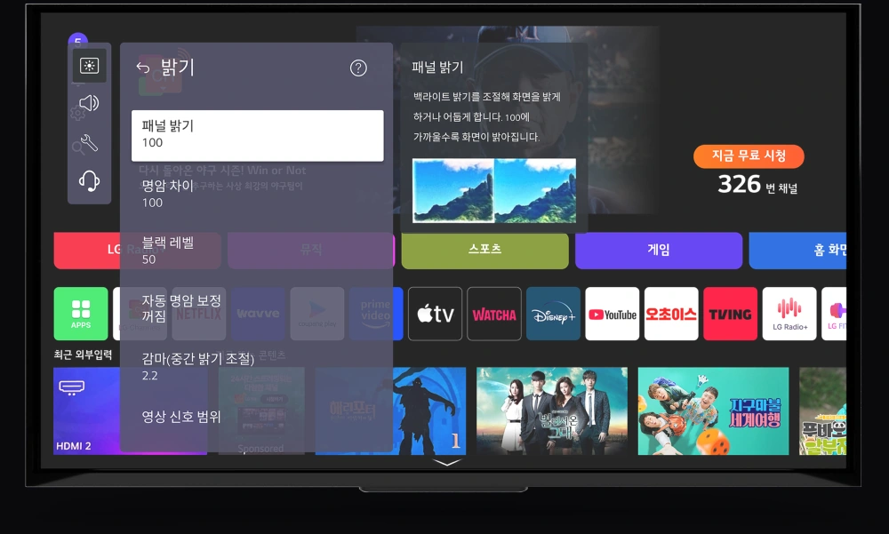
TWO ROUNDS OF EXPERIMENTS
1차 실험은 영향 요인 선별, 2차 실험은 사용성 점수를 예측하는 모델 개발에 초점을 두었습니다.
Plackett–Burman 2수준 설계로 대표 시퀀스별 요인을 실험하고 주효과를 확인했습니다.
탐색형: 썸네일 항목 수 등 / 설정·조작형: 텍스트·아이콘 크기 등
3수준 설계와 다항 회귀를 활용해 주요 요인의 곡선 반응 및 교호작용을 모델링했습니다.
연구 기록에 포함된 모델 개발 과정이며 개인 단독 분석 결과가 아닙니다.
아래 수치는 모델의 설명력이며, 예측 정확도나 실제 사용성 개선율이 아닙니다.
탐색형 이동 모델 · 수정 결정계수
설정·조작 모델 · 수정 결정계수
y = −8.31 + 0.613X₁ − 0.00089X₂ + 0.0477X₃ + … − 0.0963X₄X₆
X₁ 화면 카테고리 수 · X₂ 이미지 크기 · X₃ 텍스트 글꼴 크기 · X₄ 텍스트 항목 수 · X₅ 텍스트 항목 크기 · X₆ 썸네일 항목 수y = −9.45 + 0.11377X₁ + 0.1302X₂ − 0.000311X₁² − 0.001714X₂² + 0.000264X₁X₂
X₁ 텍스트 항목 크기 · X₂ 아이콘 항목 크기DESIGN CONNECTION
썸네일 항목 수
화면 카테고리 수
텍스트 항목 크기
아이콘 항목 크기
UI 요소의 값을 확인하고 영향도를 해석
조정할 항목을 선택하고 예상 점수를 비교
연구 결과를 프로토타입의 기능 구조로 연결한 설명이며, 별도의 사용자 검증 또는 실사용 개선 효과를 의미하지 않습니다.
TOOL INFORMATION FLOW
실제 도구의 주요 입력·분석·대안·비교 흐름과 기록 및 설정 기능을 구분해 구조화했습니다.
작업 이력 · 분석 로그 · API 및 모델 설정 · 대안 재조정
TV 화면을 업로드한 뒤 평가 유형과 화면 요소를 검토·조정합니다.
01 오른쪽 패널에서 사용성 요인값을 확인·조정
사용성 점수·등급을 읽고 우선적으로 검토할 UI 요소를 확인합니다.
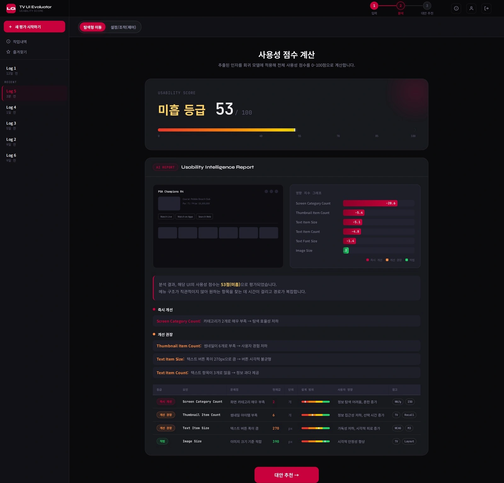
02 사용성 점수·등급과 요인별 영향을 분석
변경 항목과 권장 내용을 확인해 디자인 대안을 생성하는 단계입니다.
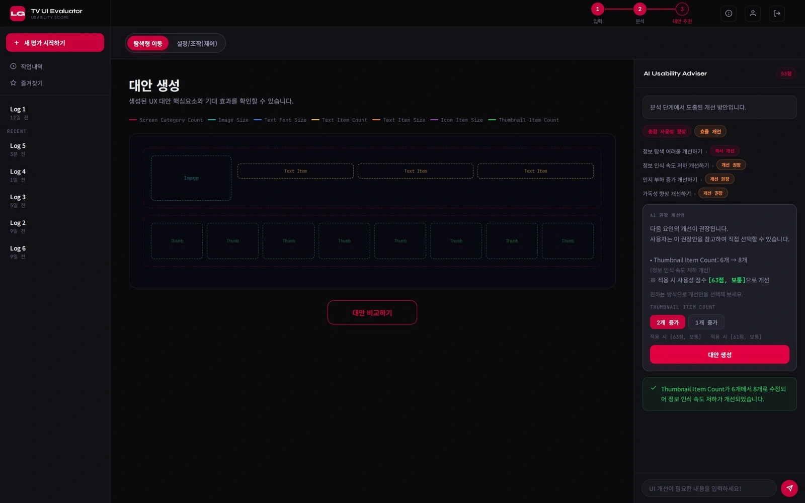
03 오른쪽 권장 패널에서 변경 항목과 제안을 검토
As-Is/To-Be 화면과 요인값·예측 점수의 차이를 검토합니다.
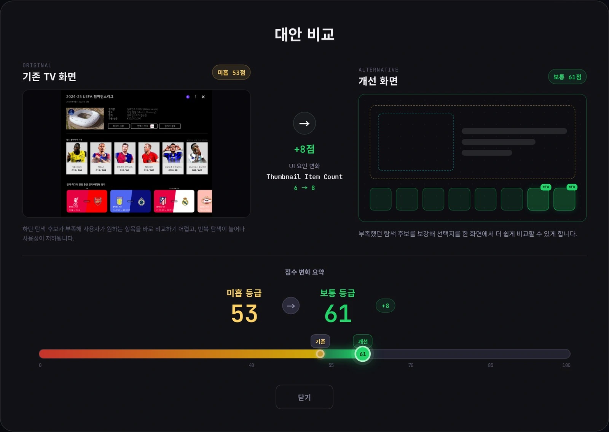
04 비교 화면의 점수 변화는 프로토타입 예시값
캡처에 표시된 53점·61점은 프로토타입 화면의 예시값이며 실제 사용자 개선 효과를 뜻하지 않습니다.
BEHIND THE INTERFACE
API 연결, 모델, 평가 기준, 저장·보안 옵션을 사용자가 확인할 수 있도록 분류했습니다.
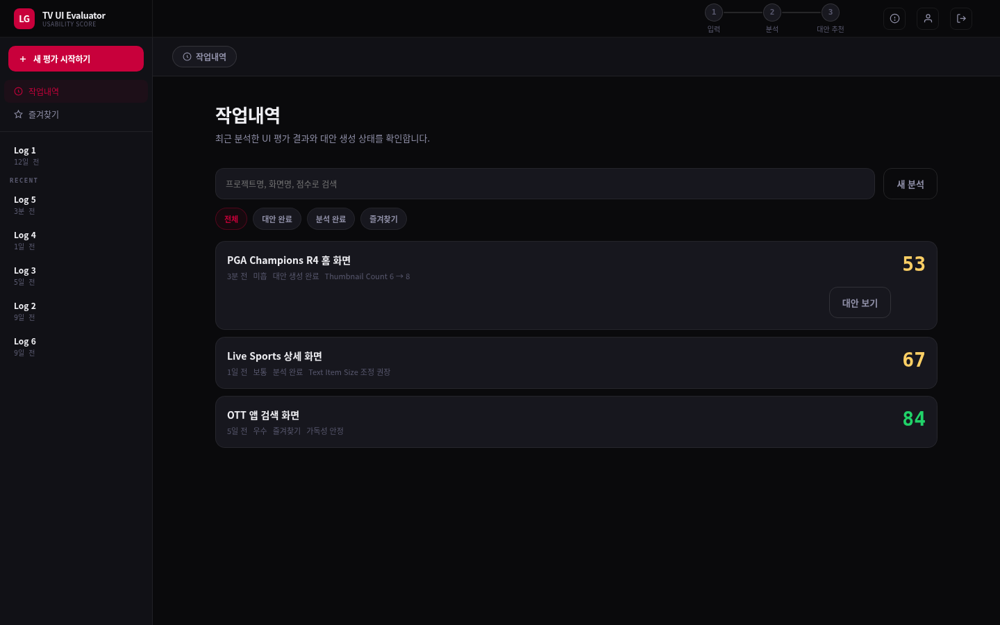
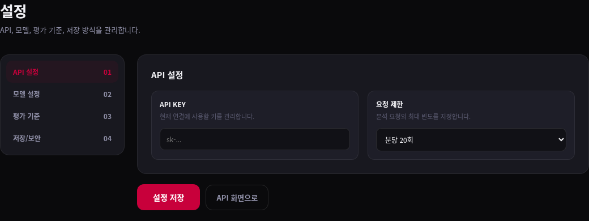
연결 키와 요청 제한
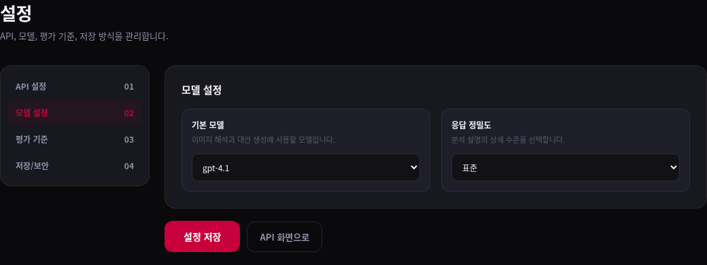
기본 모델과 응답 정밀도
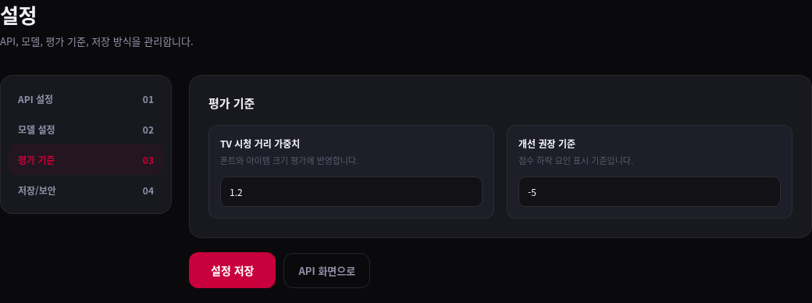
시청 거리 가중치와 평가 기준
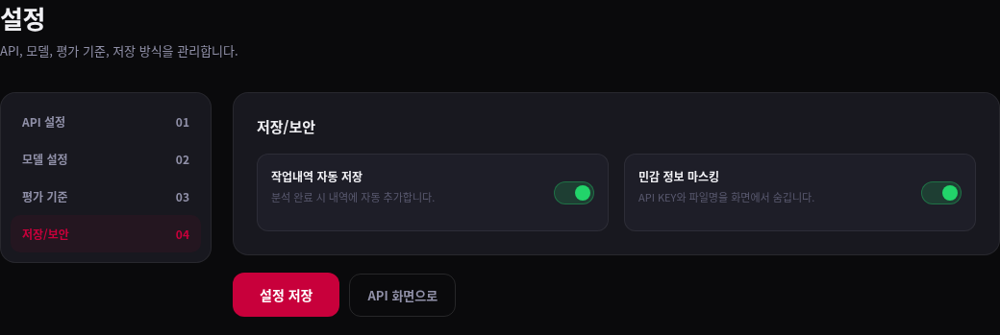
자동 저장과 민감정보 마스킹
LG전자 UI/UX 부서와 소통하며 진행한 산학 연구를 통해, 실험과 분석의 결과가 실무에서 어떻게 논의되고 구체화되는지 경험했습니다. 일정에 맞춰 중간 결과를 공유하고 피드백을 반영하는 과정에서, 시각적 완성도만큼 판단 근거를 명확히 전달하는 일이 중요함을 배웠습니다.
학부연구생으로 참여하며 복잡한 연구 내용을 충분히 이해하면서도 짧은 일정에 맞춰 정리해야 했습니다. 다음에는 작업 목적을 먼저 구조화하고, 궁금한 부분을 더 적극적으로 확인해 연구의 맥락을 스스로 설명하고 제안하는 역량을 기르고자 합니다.